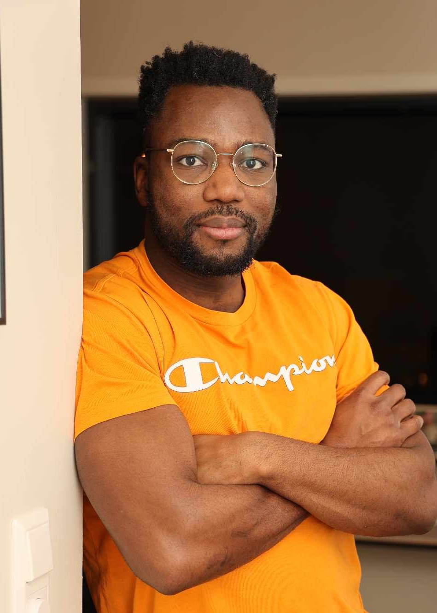

Mine ambisjoner og motivasjon
Jeg heter Dennis Akintola, er 31 år gammel og kommer fra Kristiansand. Selv om jeg har en bachelorgrad i historie, har jeg alltid hatt en sterk lidenskap for teknologi, spesielt hvordan teknologi kan brukes som et verktøy for å løse problemer.
På fritiden bruker jeg mye tid på trening, å være sammen med venner og å utvikle egne sideprosjekter for å videreutvikle og vedlikeholde mine tekniske ferdigheter. Jeg er interessert i både backend og frontend (fullstack), siden begge deler engasjerer meg og jeg har en viss erfaring med begge områder.
Jeg er også villig til å ta andre ikke-tekniske roller, så lenge det bidrar til at gruppen når målet sitt.

 Kilde kode
Kilde kode